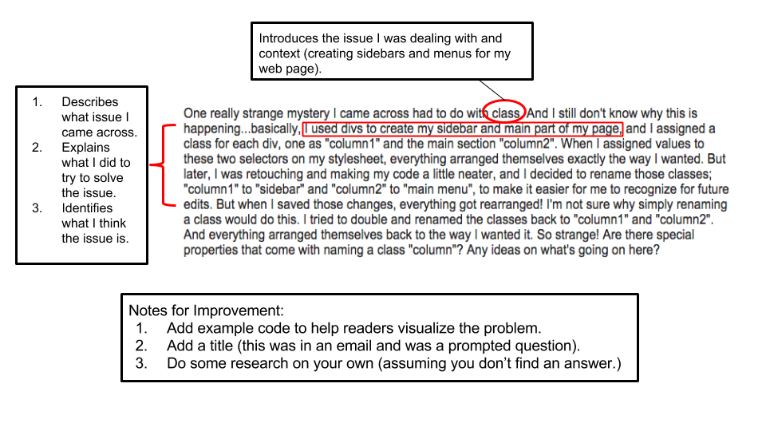

During my days as a teacher, I came across many stupid questions. (Yes. There is such thing as stupid questions). A silly question is when I explained the directions to you 1 minute ago, left the visual display of all the information I mentioned up for you on the front screen, gave you your own copy of the directions on your desk, but you decide to ask what step 2 is...even though you could use your own eyeballs to reference bullet point #2 dislayed on the front screen and on your desk. (You can tell this has happened all the time in my classroom.)
Separate from silly questions--QUESTIONS ARE A GREAT AND EFFICIENT WAY TO LEARN! I cannot stress enough that it will take forever learning how to code if you don't put yourself out there and ask questions. There is a whole community out there willing and wanting to help you! Take advantage of it!
But be mindful about HOW you ask your questions--which is what I will be discussing in this entry. I have an example of a question I wrote to my DBC accountability group during our 2nd week of Phase0. In the image below, I dissect why parts of my question made it an adequate question, and include notes for improvement when writing questions in the future.
You can find other great resources about how to ask questions about coding here. Here are five rules I recommend keeping in mind when asking questions:
In short, keep it clean and simple. Include what's needed for someone to understand your question--nothing more, nothing less. The goal isn't to include fancy technical knowledge so that you look impressive to your readers, but to genuinely get to the point and get your answer ASAP. Ain't nobody got time to read a novel length question, let alone answer back. So don't waste your time writing one a super long question!
I'm going take my own advice now and ask some questions on coding challenges that I'm stuck on.